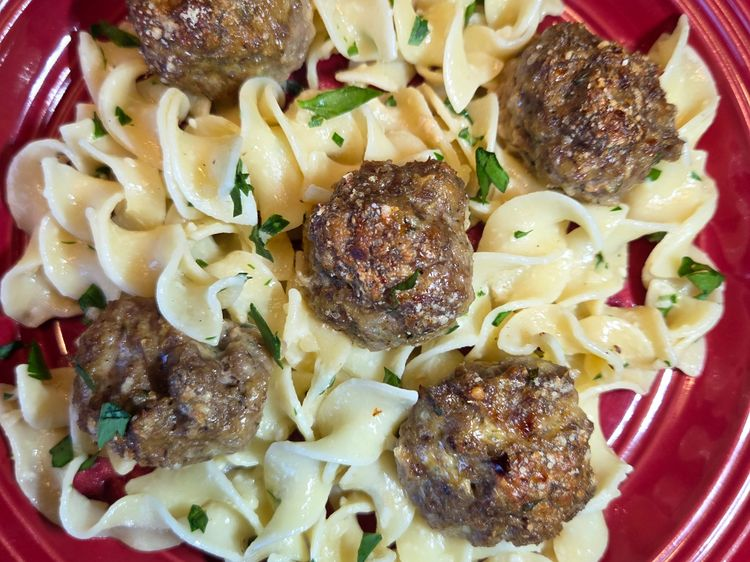

Home
Italian Meatballs on Parmesan Noodles

Description
Baked Italian meatballs served over garlic Parmesan noodles. They're
so good, and despite the long list of ingredients, most are
seasonings, so they are not difficult to make.
Ingredients
For the meatballs
- ½ cup Italian seasoned bread crumbs
- ½ cup finely grated Parmesan cheese, plus more for baking
- ¼ cup chopped fresh parsley
- 1 tablespoon dried oregano
- ½ tablespoon minced garlic or garlic paste
- ½ tablespoon kosher salt
- ½ tablespoon freshly ground black pepper
- 1 teaspoon dried basil
- ½ teaspoon red pepper flakes
- 1 large egg, beaten
- ¼ cup milk
- 1 ¼ cups beef broth, divided, or more as needed
- 1 pound 80% lean ground beef
For the Parmesan Noodles
- 12 ounces egg noodles
- 1 ½ tablespoons salted butter
- 1 tablespoon garlic paste
- ¼ cup grated Parmesan cheese
- 1 tablespoon olive oil
- 1 teaspoon freshly ground black pepper
- 2 tablespoons chopped fresh parsley, plus more for garnish
Steps
- Preheat the oven: Set the oven to 425°F (225°C).
-
Combine dry ingredients: In a bowl, mix together the
breadcrumbs, Parmesan, parsley, oregano, garlic, salt, black
pepper, basil, and red pepper flakes with a fork.
-
Add wet ingredients and beef: Stir in the egg, milk, and
¼ cup of beef broth. Then, add the ground beef and mix with a
fork just until everything is combined.
-
Form the meatballs: With wet hands, roll the meat mixture
into medium-sized balls and place them in a large casserole
dish.
-
Add broth and cheese: Pour 1 cup of beef broth into the
casserole dish, or enough to create a ¼ inch deep layer.
Sprinkle the meatballs with Parmesan cheese.
-
Bake the meatballs (first round): Bake for 15 minutes.
-
Flip and bake again: Turn the meatballs over and continue
baking for about 15 minutes more, or until they are no longer
pink in the center.
-
Cook the noodles: While the meatballs are baking, bring a
large pot of salted water to a boil. Add the egg noodles and
cook until they are tender with a bite, which takes about 10
minutes. Drain the noodles.
-
Prepare the Parmesan noodles: Place the drained noodles
in a bowl and immediately add the butter, garlic paste,
Parmesan, olive oil, black pepper, and parsley. Stir everything
to combine.
-
Serve: Remove the meatballs from the oven. To serve,
spoon the prepared noodles onto a plate and top with the
meatballs.
- Garnish: Sprinkle wth more parsley before enjoying.